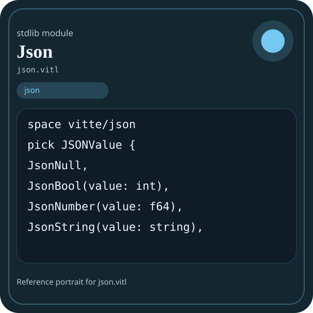

Stdlib module json.vitl
This page is a wiki-style reference for one concrete stdlib file. It explains what the file owns, where it fits in the family, and how to decide whether this is the right surface to depend on.

json.vitl.Family: json
Kind: public stdlib surface
Page style: this reference follows the same “encyclopedic card + portrait + usage contract” logic as the keyword pages, but for stdlib modules.
Summary
- Overview
- Purpose
- Taxonomy
- Implementation profile
- Top-level API inventory
- Position in family
- Declaration map
- Representative signatures
- How to use this module
- User example
- Keyword coverage
- Source shape
- Source landmarks
- Source organization
- Complete API catalog
- Integration boundaries
- Composition guidance
- Relationship table
- Neighbor modules
Overview
| Field | Value |
|---|---|
| Path | json.vitl |
| Family | json |
| Kind | public stdlib surface |
| Line count | 305 |
| Declared procedures | 41 |
| Declared forms/picks | 11 |
`json.vitl` is a public stdlib surface inside the `json` family. It should be read as one focused slice of the broader family responsibility: Structured JSON surfaces including parse, parser, types, builder, schema, stringify, and serialize.
Purpose
This file should be chosen because of responsibility, not because its name “sounds close enough”. Inside the json family, it carries one focused part of the contract and keeps that responsibility separate from neighboring concerns.
- Use this module when structured exchange format is part of the feature, not just an incidental output.
- A build plan can be validated as domain data first and then exported to JSON in a separate step.
- A parser page should say how syntax becomes JSON values before serialization details appear.
Taxonomy
Think of this page as a generated encyclopedia entry rather than a hand-written tutorial. The goal is to show what kind of module this is, how dense it is, and what reading strategy makes sense before depending on it.
- Large algorithm surface: this file exposes many procedures and likely acts as a domain toolkit rather than a single thin wrapper.
- Owns domain vocabulary: the module declares data shapes in addition to executable helpers, so its types are part of the contract.
- Minimal top-level dependencies: the module reads as mostly self-contained from its opening declarations.
- Explicit export surface: the file ends with visible export declarations instead of relying only on implicit namespace discovery.
Implementation profile
This profile is inferred directly from the source text. It does not replace reading the file, but it tells you quickly whether the module is mostly declarative, loop-heavy, branch-heavy, or organized around many small exits.
| Signal | Count | What it suggests |
|---|---|---|
if | 1 | Branching density and local decision-making. |
while | 0 | Loop-heavy or iterative implementation style. |
for | 0 | Collection-style traversal at source level. |
match | 0 | Variant-driven branching or grammar-style decoding. |
let | 2 | Local state and intermediate value density. |
give | 40 | Number of explicit exit points and result shaping. |
Top-level API inventory
| Surface | Items |
|---|---|
| Procedures | json_version, json_name, json_module_count, json_modules, json_manifest, json_ready, json_health, json_summary, json_selftest, json_report, json_parse, json_stringify |
| Forms | JSONParser, JSONBuilder, JsonLibraryManifest, JsonLibraryHealth, JsonLibrarySummary, JsonLibraryReport, JsonParseReport, JsonStringifyReport, JsonBuilderReport, JsonSchemaReport |
| Picks | JSONValue |
| Constants | none declared at top level |
| Exports | * |
Imported surfaces
This file does not advertise a top-level `use` surface in its opening declarations. That often means it is either self-contained or an aggregation layer.
Position in family
This file is module 1 of 8 in the json family when ordered by path. By procedure count it ranks 1, and by line count it ranks 1. Those ranks are useful as rough signals of breadth, not as quality judgments.
Declaration map
The declaration map turns raw source into a scan-friendly catalog. It is useful when the file is large enough that a reader wants to orient by kinds of surfaces first.
| Line | Name | Kind | Role |
|---|---|---|---|
| 1 | vitte/json | space | Declares the namespace that anchors this file in the stdlib tree. |
| 7 | JSONValue | pick | Introduces a tagged variant type used to model distinct outcomes. |
| 16 | JSONParser | form | Introduces a structured data shape that other procedures can exchange. |
| 22 | JSONBuilder | form | Introduces a structured data shape that other procedures can exchange. |
| 27 | JsonLibraryManifest | form | Introduces a structured data shape that other procedures can exchange. |
| 33 | JsonLibraryHealth | form | Introduces a structured data shape that other procedures can exchange. |
| 43 | JsonLibrarySummary | form | Introduces a structured data shape that other procedures can exchange. |
| 48 | JsonLibraryReport | form | Introduces a structured data shape that other procedures can exchange. |
| 54 | JsonParseReport | form | Introduces a structured data shape that other procedures can exchange. |
| 60 | JsonStringifyReport | form | Introduces a structured data shape that other procedures can exchange. |
| 66 | JsonBuilderReport | form | Introduces a structured data shape that other procedures can exchange. |
| 72 | JsonSchemaReport | form | Introduces a structured data shape that other procedures can exchange. |
| 77 | json_version | proc | Represents one top-level surface in the file contract and should be read as part of the module boundary. |
| 81 | json_name | proc | Represents one top-level surface in the file contract and should be read as part of the module boundary. |
| 85 | json_module_count | proc | Represents one top-level surface in the file contract and should be read as part of the module boundary. |
| 88 | json_modules | proc | Represents one top-level surface in the file contract and should be read as part of the module boundary. |
| 99 | json_manifest | proc | Represents one top-level surface in the file contract and should be read as part of the module boundary. |
| 106 | json_ready | proc | Represents one top-level surface in the file contract and should be read as part of the module boundary. |
| 109 | json_health | proc | Represents one top-level surface in the file contract and should be read as part of the module boundary. |
| 120 | json_summary | proc | Represents one top-level surface in the file contract and should be read as part of the module boundary. |
| 126 | json_selftest | proc | Represents one top-level surface in the file contract and should be read as part of the module boundary. |
| 133 | json_report | proc | Represents one top-level surface in the file contract and should be read as part of the module boundary. |
| 141 | json_parse | proc | Transforms an input representation into a structured internal value. |
| 145 | json_stringify | proc | Turns internal values into a transport or textual representation. |
| 149 | json_stringify_pretty | proc | Turns internal values into a transport or textual representation. |
| 153 | json_parse_object | proc | Transforms an input representation into a structured internal value. |
| 157 | json_parse_array | proc | Transforms an input representation into a structured internal value. |
| 161 | json_parse_string | proc | Transforms an input representation into a structured internal value. |
| 165 | json_parse_number | proc | Transforms an input representation into a structured internal value. |
| 169 | json_parse_bool | proc | Transforms an input representation into a structured internal value. |
| 173 | json_parse_null | proc | Transforms an input representation into a structured internal value. |
| 177 | json_builder_new | proc | Represents one top-level surface in the file contract and should be read as part of the module boundary. |
| 184 | json_builder_append_null | proc | Represents one top-level surface in the file contract and should be read as part of the module boundary. |
| 189 | json_builder_append_bool | proc | Represents one top-level surface in the file contract and should be read as part of the module boundary. |
| 198 | json_builder_append_number | proc | Represents one top-level surface in the file contract and should be read as part of the module boundary. |
| 202 | json_builder_append_string | proc | Represents one top-level surface in the file contract and should be read as part of the module boundary. |
| 209 | json_builder_start_object | proc | Represents one top-level surface in the file contract and should be read as part of the module boundary. |
| 215 | json_builder_end_object | proc | Represents one top-level surface in the file contract and should be read as part of the module boundary. |
| 221 | json_builder_start_array | proc | Represents one top-level surface in the file contract and should be read as part of the module boundary. |
| 227 | json_builder_end_array | proc | Represents one top-level surface in the file contract and should be read as part of the module boundary. |
| 233 | json_builder_append_comma | proc | Represents one top-level surface in the file contract and should be read as part of the module boundary. |
| 238 | json_builder_append_colon | proc | Represents one top-level surface in the file contract and should be read as part of the module boundary. |
| 245 | json_builder_to_string | proc | Represents one top-level surface in the file contract and should be read as part of the module boundary. |
| 249 | json_builder_clear | proc | Represents one top-level surface in the file contract and should be read as part of the module boundary. |
| 255 | json_is_valid | proc | Represents one top-level surface in the file contract and should be read as part of the module boundary. |
| 259 | json_format | proc | Represents one top-level surface in the file contract and should be read as part of the module boundary. |
| 263 | json_minify | proc | Represents one top-level surface in the file contract and should be read as part of the module boundary. |
| 267 | json_value_type | proc | Represents one top-level surface in the file contract and should be read as part of the module boundary. |
| 271 | json_parse_report | proc | Transforms an input representation into a structured internal value. |
| 279 | json_stringify_report | proc | Turns internal values into a transport or textual representation. |
| 287 | json_builder_report | proc | Represents one top-level surface in the file contract and should be read as part of the module boundary. |
| 296 | json_schema_report | proc | Represents one top-level surface in the file contract and should be read as part of the module boundary. |
| 303 | json_max_report | proc | Represents one top-level surface in the file contract and should be read as part of the module boundary. |
The table is exhaustive for top-level declarations of the selected kinds. This file declares 53 matching surfaces.
Representative signatures
These signatures are shown in source order so the page keeps the feel of a reference manual, not just a keyword cloud.
pick JSONValue {(line 7)form JSONParser {(line 16)form JSONBuilder {(line 22)form JsonLibraryManifest {(line 27)form JsonLibraryHealth {(line 33)form JsonLibrarySummary {(line 43)form JsonLibraryReport {(line 48)form JsonParseReport {(line 54)form JsonStringifyReport {(line 60)form JsonBuilderReport {(line 66)form JsonSchemaReport {(line 72)proc json_version() -> string {(line 77)proc json_name() -> string {(line 81)proc json_module_count() -> i32 {(line 85)proc json_modules() -> [string] {(line 88)proc json_manifest() -> JsonLibraryManifest {(line 99)proc json_ready() -> bool {(line 106)proc json_health() -> JsonLibraryHealth {(line 109)
The list is intentionally capped here; the source file declares 52 matching signatures in total.
How to use this module
Start by reading the file as an ownership boundary. Ask three questions: what enters this module, what stable types or procedures it exports, and what adjacent module should stay outside of it.
- Read
spaceand top-level imports first so the ownership boundary ofjson.vitlis explicit. - Read declared forms and picks before algorithms so the data vocabulary is stable in your head.
- Traverse procedures in source order; the early helpers usually explain the naming and numeric conventions used later.
- Use the source landmarks section below as a table of contents when the file is large.
- Only after that compare neighbor modules, because the right boundary choice matters more than memorizing one helper name.
User example
This example is generated from the actual stdlib module surface. Its job is not to be the smallest snippet possible; its job is to show a realistic consumer-shaped file that exercises the module and mirrors the language keywords the module itself relies on.
space demo/json
form UserReport {
label: string,
ready: bool
}
pick UserOutcome {
case Ready(message: string)
case Empty(reason: string)
}
proc run_example() -> UserOutcome {
let entries = json_modules()
let ready: bool = json_ready()
let failed: bool = false
let stable: bool = ready and true
if ready {
give UserOutcome.Empty("module not ready")
} else {
give UserOutcome.Ready("ok")
}
}
export run_exampleKeyword coverage
This table makes the “all keywords of the module” requirement auditable. It compares the detected Vitte keywords in the source file with the generated consumer example above.
| Keyword | Present in module source | Used in generated user example |
|---|---|---|
space | yes | yes |
form | yes | yes |
pick | yes | yes |
proc | yes | yes |
let | yes | yes |
if | yes | yes |
else | yes | yes |
give | yes | yes |
export | yes | yes |
true | yes | yes |
false | yes | yes |
and | yes | yes |
The generated snippet exercises every detected Vitte keyword used by this module.
Source shape
space vitte/json
pick JSONValue {
JsonNull,
JsonBool(value: int),
JsonNumber(value: f64),
JsonString(value: string),
JsonArray(items: [JSONValue]),
JsonObject(keys: [string])
}
form JSONParser {The excerpt is not meant to replace the file. It exists to make the module recognizable at first glance, the same way a Wikipedia infobox helps the reader orient before reading the whole article.
Source landmarks
Large files are easier to retain when they have visible landmarks. When the source contains explicit section banners, they are surfaced here; otherwise the first major declarations are used as anchors.
- JSON Library — JSON parsing and serialization
Source organization
When a file carries its own internal chaptering, those chapters usually reveal the intended reading order better than a flat symbol list. This section reconstructs that organization from the source itself.
Opening declarations
Top-level items: 1. Procedures: 0. Data surfaces: 0. Constants: 0.
First visible names: vitte/json
JSON Library — JSON parsing and serialization
Top-level items: 53. Procedures: 41. Data surfaces: 11. Constants: 0.
First visible names: JSONValue, JSONParser, JSONBuilder, JsonLibraryManifest, JsonLibraryHealth, JsonLibrarySummary, JsonLibraryReport, JsonParseReport, JsonStringifyReport, JsonBuilderReport
Complete API catalog
This catalog is the exhaustive file-level index for the module. It is intentionally closer to a generated encyclopedia appendix than to a tutorial summary.
Data surfaces
| Line | Name | Signature | Role |
|---|---|---|---|
| 7 | JSONValue | pick JSONValue { | Introduces a tagged variant type used to model distinct outcomes. |
| 16 | JSONParser | form JSONParser { | Introduces a structured data shape that other procedures can exchange. |
| 22 | JSONBuilder | form JSONBuilder { | Introduces a structured data shape that other procedures can exchange. |
| 27 | JsonLibraryManifest | form JsonLibraryManifest { | Introduces a structured data shape that other procedures can exchange. |
| 33 | JsonLibraryHealth | form JsonLibraryHealth { | Introduces a structured data shape that other procedures can exchange. |
| 43 | JsonLibrarySummary | form JsonLibrarySummary { | Introduces a structured data shape that other procedures can exchange. |
| 48 | JsonLibraryReport | form JsonLibraryReport { | Introduces a structured data shape that other procedures can exchange. |
| 54 | JsonParseReport | form JsonParseReport { | Introduces a structured data shape that other procedures can exchange. |
| 60 | JsonStringifyReport | form JsonStringifyReport { | Introduces a structured data shape that other procedures can exchange. |
| 66 | JsonBuilderReport | form JsonBuilderReport { | Introduces a structured data shape that other procedures can exchange. |
| 72 | JsonSchemaReport | form JsonSchemaReport { | Introduces a structured data shape that other procedures can exchange. |
Procedures
| Line | Name | Signature | Role |
|---|---|---|---|
| 77 | json_version | proc json_version() -> string { | Represents one top-level surface in the file contract and should be read as part of the module boundary. |
| 81 | json_name | proc json_name() -> string { | Represents one top-level surface in the file contract and should be read as part of the module boundary. |
| 85 | json_module_count | proc json_module_count() -> i32 { | Represents one top-level surface in the file contract and should be read as part of the module boundary. |
| 88 | json_modules | proc json_modules() -> [string] { | Represents one top-level surface in the file contract and should be read as part of the module boundary. |
| 99 | json_manifest | proc json_manifest() -> JsonLibraryManifest { | Represents one top-level surface in the file contract and should be read as part of the module boundary. |
| 106 | json_ready | proc json_ready() -> bool { | Represents one top-level surface in the file contract and should be read as part of the module boundary. |
| 109 | json_health | proc json_health() -> JsonLibraryHealth { | Represents one top-level surface in the file contract and should be read as part of the module boundary. |
| 120 | json_summary | proc json_summary() -> JsonLibrarySummary { | Represents one top-level surface in the file contract and should be read as part of the module boundary. |
| 126 | json_selftest | proc json_selftest() -> bool { | Represents one top-level surface in the file contract and should be read as part of the module boundary. |
| 133 | json_report | proc json_report() -> JsonLibraryReport { | Represents one top-level surface in the file contract and should be read as part of the module boundary. |
| 141 | json_parse | proc json_parse(text_value: string) -> JSONValue { | Transforms an input representation into a structured internal value. |
| 145 | json_stringify | proc json_stringify(value: JSONValue) -> string { | Turns internal values into a transport or textual representation. |
| 149 | json_stringify_pretty | proc json_stringify_pretty(value: JSONValue, indent: i32) -> string { | Turns internal values into a transport or textual representation. |
| 153 | json_parse_object | proc json_parse_object(parser: JSONParser) -> [string] { | Transforms an input representation into a structured internal value. |
| 157 | json_parse_array | proc json_parse_array(parser: JSONParser) -> [JSONValue] { | Transforms an input representation into a structured internal value. |
| 161 | json_parse_string | proc json_parse_string(parser: JSONParser) -> string { | Transforms an input representation into a structured internal value. |
| 165 | json_parse_number | proc json_parse_number(parser: JSONParser) -> f64 { | Transforms an input representation into a structured internal value. |
| 169 | json_parse_bool | proc json_parse_bool(parser: JSONParser) -> int { | Transforms an input representation into a structured internal value. |
| 173 | json_parse_null | proc json_parse_null(parser: JSONParser) -> int { | Transforms an input representation into a structured internal value. |
| 177 | json_builder_new | proc json_builder_new() -> JSONBuilder { | Represents one top-level surface in the file contract and should be read as part of the module boundary. |
| 184 | json_builder_append_null | proc json_builder_append_null(b: JSONBuilder) -> int { | Represents one top-level surface in the file contract and should be read as part of the module boundary. |
| 189 | json_builder_append_bool | proc json_builder_append_bool(b: JSONBuilder, value: int) -> int { | Represents one top-level surface in the file contract and should be read as part of the module boundary. |
| 198 | json_builder_append_number | proc json_builder_append_number(b: JSONBuilder, value: f64) -> int { | Represents one top-level surface in the file contract and should be read as part of the module boundary. |
| 202 | json_builder_append_string | proc json_builder_append_string(b: JSONBuilder, value: string) -> int { | Represents one top-level surface in the file contract and should be read as part of the module boundary. |
| 209 | json_builder_start_object | proc json_builder_start_object(b: JSONBuilder) -> int { | Represents one top-level surface in the file contract and should be read as part of the module boundary. |
| 215 | json_builder_end_object | proc json_builder_end_object(b: JSONBuilder) -> int { | Represents one top-level surface in the file contract and should be read as part of the module boundary. |
| 221 | json_builder_start_array | proc json_builder_start_array(b: JSONBuilder) -> int { | Represents one top-level surface in the file contract and should be read as part of the module boundary. |
| 227 | json_builder_end_array | proc json_builder_end_array(b: JSONBuilder) -> int { | Represents one top-level surface in the file contract and should be read as part of the module boundary. |
| 233 | json_builder_append_comma | proc json_builder_append_comma(b: JSONBuilder) -> int { | Represents one top-level surface in the file contract and should be read as part of the module boundary. |
| 238 | json_builder_append_colon | proc json_builder_append_colon(b: JSONBuilder) -> int { | Represents one top-level surface in the file contract and should be read as part of the module boundary. |
| 245 | json_builder_to_string | proc json_builder_to_string(b: JSONBuilder) -> string { | Represents one top-level surface in the file contract and should be read as part of the module boundary. |
| 249 | json_builder_clear | proc json_builder_clear(b: JSONBuilder) { | Represents one top-level surface in the file contract and should be read as part of the module boundary. |
| 255 | json_is_valid | proc json_is_valid(text_value: string) -> int { | Represents one top-level surface in the file contract and should be read as part of the module boundary. |
| 259 | json_format | proc json_format(text_value: string) -> string { | Represents one top-level surface in the file contract and should be read as part of the module boundary. |
| 263 | json_minify | proc json_minify(text_value: string) -> string { | Represents one top-level surface in the file contract and should be read as part of the module boundary. |
| 267 | json_value_type | proc json_value_type(value: JSONValue) -> string { | Represents one top-level surface in the file contract and should be read as part of the module boundary. |
| 271 | json_parse_report | proc json_parse_report(text_value: string) -> JsonParseReport { | Transforms an input representation into a structured internal value. |
| 279 | json_stringify_report | proc json_stringify_report(value: JSONValue) -> JsonStringifyReport { | Turns internal values into a transport or textual representation. |
| 287 | json_builder_report | proc json_builder_report() -> JsonBuilderReport { | Represents one top-level surface in the file contract and should be read as part of the module boundary. |
| 296 | json_schema_report | proc json_schema_report() -> JsonSchemaReport { | Represents one top-level surface in the file contract and should be read as part of the module boundary. |
| 303 | json_max_report | proc json_max_report() -> JsonLibrarySummary { | Represents one top-level surface in the file contract and should be read as part of the module boundary. |
Exports
| Line | Name | Signature | Role |
|---|---|---|---|
| 243 | * | export * | Re-exports surfaces that the module wants to expose as part of its public boundary. |
Integration boundaries
Within json, this file should remain focused. If a future helper changes the host boundary, scheduling boundary, or data-shape boundary, it probably belongs in a neighbor module instead of being added here by convenience.
- Family responsibility: Structured JSON surfaces including parse, parser, types, builder, schema, stringify, and serialize.
- Family architecture role: Use `json` when data must cross a structured textual boundary. This family owns JSON shape and conversion, not business validation itself.
Composition guidance
Choose this module when
- Choose
json.vitlwhen the main question is owned by this module rather than by transport, storage, orchestration, or user-interface code. - Use this module when structured exchange format is part of the feature, not just an incidental output.
- A build plan can be validated as domain data first and then exported to JSON in a separate step.
- A parser page should say how syntax becomes JSON values before serialization details appear.
Pause before extending it when
- Avoid extending this file when the new helper mostly changes the boundary to host I/O, runtime coordination, or foreign integration instead of staying inside
json. - Check nearby modules such as
json/builder.vitl,json/parse.vitl,json/parser.vitlbefore adding convenience wrappers here.
Relationship table
This table keeps the page closer to a real encyclopedia entry: a module is easier to understand when compared with its nearest alternatives in the same family.
| Neighbor | Procedures | Data surfaces | Why compare it |
|---|---|---|---|
json/builder.vitl | 17 | 3 | Shares the same family boundary but carries a distinct slice of responsibility. |
json/parse.vitl | 11 | 3 | Shares the same family boundary but carries a distinct slice of responsibility. |
json/parser.vitl | 11 | 0 | Shares the same family boundary but carries a distinct slice of responsibility. |
json/schema.vitl | 9 | 2 | Shares the same family boundary but carries a distinct slice of responsibility. |
json/serialize.vitl | 10 | 1 | Shares the same family boundary but carries a distinct slice of responsibility. |
json/stringify.vitl | 10 | 2 | Shares the same family boundary but carries a distinct slice of responsibility. |
json/types.vitl | 4 | 4 | Shares the same family boundary but carries a distinct slice of responsibility. |